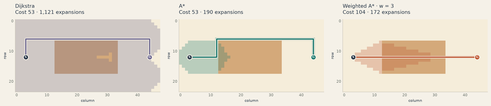
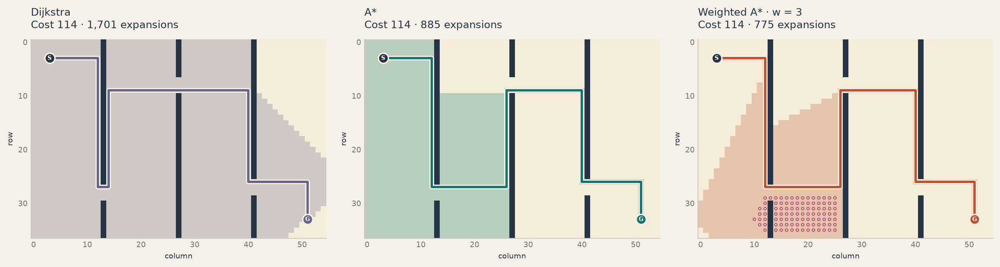
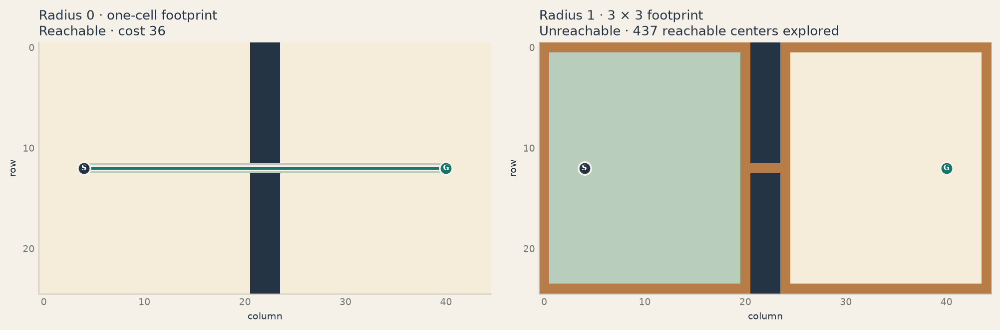
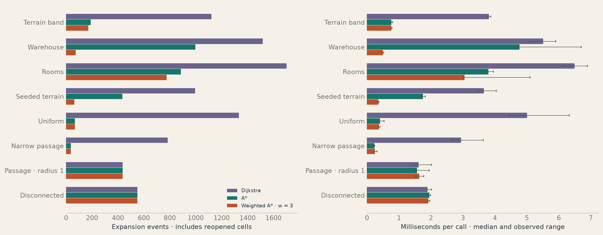

DIJKSTRA / A* / WEIGHTED A*
Grid route planning
Three source-built graph searches on positive-cost terrain. Each route is measured against the Dijkstra reference and preserved with its map and expansion trace.
8procedural maps
24preserved routes / attempts
120timed search calls
DijkstraA*Weighted A*Filled cells: expanded · line: returned route

Terrain-band result: A* returns cost 53; weighted A* returns 104 (1.962× optimal). Its 172 expansions are only slightly fewer than A*'s 190. Fewer expansions do not establish a better route.
01 / SEARCH BEHAVIOR
Search traces and reopened cells
The rooms map forces repeated detours. Weighted A* expands 775 times across 624 distinct cells, including 151 reopened expansions. Small magenta rings mark cells that were expanded again after a lower cost was found.

All searches reject stale heap entries and relax only strict cost improvements. Equal priorities prefer lower remaining heuristic, then insertion order. Neighbors are considered up, right, down, left.
A* uses minimum free-cell terrain cost × Manhattan distance. Weighted A* uses g + 3h and permits reopening. Under this finite positive-cost model its returned cost is bounded by three times optimal; it is not guaranteed to reduce runtime.
02 / FOOTPRINT MODEL
Obstacle inflation and map boundaries
A radius-r footprint contains every offset in the square [−r, r] × [−r, r]. A center is excluded if any footprint cell is blocked or outside the map. Brown cells show the additional exclusions at radius 1.

The same one-cell passage changes from reachable to unreachable. This is an exact discrete square-footprint rule, with center-cell terrain costs. It is not a continuous collision certificate, a robot dynamics model or evidence from a physical robot.
03 / MEASURED RESULTS
Route cost and search work

Five warmed repetitions per configuration; whiskers show minimum and maximum, not confidence intervals. Timing includes heap operations, route snapshots and trace construction. Unreachable maps have no cost ratio.All six reachable cases give equal costs for Dijkstra and A*. Weighted A* raises cost on two cases and matches optimal cost on four. No claim is made that weighting always saves work; the unreachable cases exhaust the same reachable component.
04 / TRACE REPLAY
Expansion sequence
The animation replays the stored terrain-band CSV traces. Each panel uses its own normalized expansion progress; it is not a wall-clock race. Final routes appear after the trace completes.
A* trace CSV · A* path coordinates · Input map JSON
05 / VALIDATION
Independent references and reproduction
Correctness checks
12 tests include an independent Bellman–Ford reference on 100 seeded grids, five search settings per grid, heuristic admissibility and consistency checks, 140 enumerated footprint comparisons, blocked endpoints, unreachable cases, stale heap entries and exact priorities beyond floating-point range.
Tests · Algorithms and bound assumptions
Preserved evidence
Maps in JSON and CSV, route coordinates, complete expansion traces, raw timings and SHA-256 manifests are committed. Source hashes normalize line endings to LF. Fresh runs use separate directories.
Summary CSV · Raw timings · Run environment · Methodology · Findings
python -m pip install -e .
python -m unittest discover -s tests -v
python scripts/run_study.py --out outputs/my-run